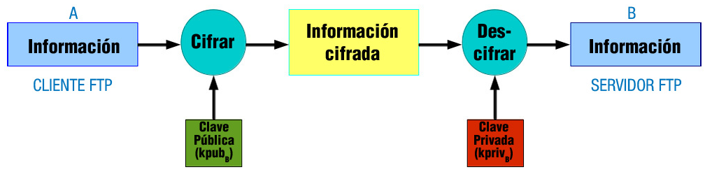

Asegurando el Servicio de Transferencia de Archivos
FTPS y SFTP para cifrado
1.11. Asegurando el servicio de transferencia de archivos
Bien, pero ¿qué pasa con los datos en la transferencia? ¿viajan cifrados? ¿no? Pues empleando el protocolo ftp cualquiera que tenga acceso al canal de transmisión podrá ver en texto claro todo lo que se transmite, esto es, los datos no se cifran. Esto puede carecer de importancia, o no, según el contexto de la transmisión. Así, puede que a un organismo público no le importe compartir información a través de ftp y que los datos en la transferencia viajen sin cifrar y, sin embargo, a una empresa si le interese que los datos viajen cifrados.
Entonces, cuando interese asegurar el servicio de transferencia de archivos debes descartar el protocolo ftp y empezar a pensar en otras alternativas, como: ftps o sftp.
FTPS es una extensión del protocolo FTP que asegura el cifrado en la transferencia mediante los protocolos SSL/TLS. Permite tres tipos de funcionamiento:
- SSL Implícito:
- Como conexiones HTTPS.
- Usa los puertos 990 y 989.
- SSL Explícito
- El cliente usa los mismos puertos estándar FTP: 20 y 21 pero se efectúa el cifrado en ellos.
- Usa AUTH SSL (Authentication/Security Mechanism.).
- TLS Explícito:
- Similar a SSL Explícito pero usa AUTH TLS (FTPS Explicito.).
El cifrado al que nos referimos es el cifrado de clave pública o asimétrico: clave pública (kpub (Key Public.)) y clave privada (kpriv (Key Private.)). La kpub interesa publicarla para que llegue a ser conocida por cualquiera, la kpriv no interesa que nadie la posea, solo el propietario de la misma. Ambas son necesarias para que la comunicación sea posible, una sin la otra no tienen sentido, así una información cifrada mediante la kpub solamente puede ser descifrada mediante la kpriv y una información cifrada mediante la kpriv sólo puede ser descifrada mediante la kpub.
En el cifrado asimétrico podemos estar hablando de individuos o de máquinas, en nuestro caso hablamos de máquinas y de flujo de información entre el cliente ftp (A) y el servidor ftp (B). Ver la siguiente tabla como ejemplo de funcionamiento del cifrado asimétrico:
Funcionamiento del cifrado asimétrico.
| Funcionamiento del cifrado asimétrico | |
|---|---|
| A(inf) → inf cifrada → B [descifrar inf] → B(inf) = A(inf) | |
| A(inf) → inf cifrada = [(inf)]kpubB → B [inf. cifrada]kprivB → B(inf) = A(inf) | |
| Identificación | |
| A Cliente ftp. | |
| Funcionamiento del cifrado asimétrico | |
| inf cifrada = [(inf)]kpubB Información cifrada mediante la clave pública de B obtenida a través de un certificado digital. | |
| [inf. cifrada]kprivB Información descifrada mediante la clave privada de B. | |
| B Servidor ftp. |